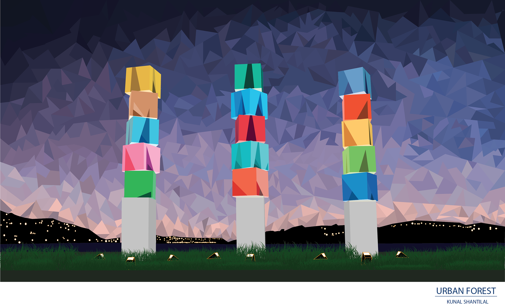

GRAPHIC
Wellington
The Wellington sign also known as 'Wellywood' is located on a hillside next to the miramar cutting. This design made in Adobe Illustrator using various shapes and lines

Urban Forest
Illustration created on Adobe Illustrator of the Wellington Urban Forest sculpture located along the Evans Bay Waterfront on Cobham Drive.
